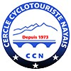

🪪 Ma Licence

L'essentiel du club dans votre poche.
Rassemblement : Parking secteur Pourtalet / Araillé.
Point GPS : RH8J+3QQ Laruns.
Horaires : 9h00 (départ 9h30).
Le partage envoie un lien ouvrant cette carte sur votre position actuelle.